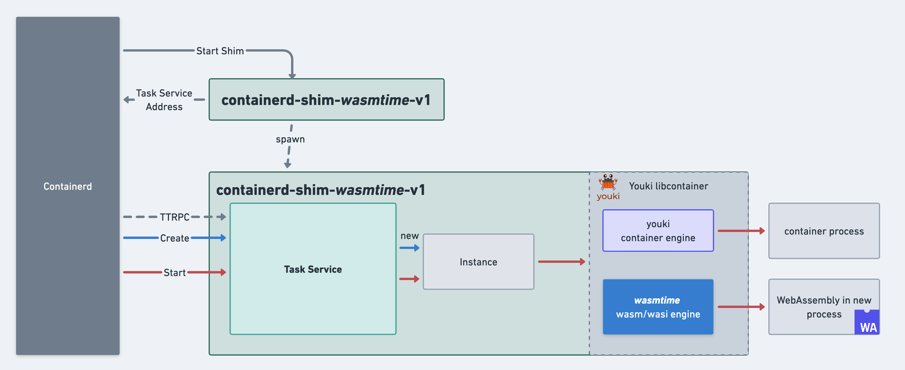

Architecture Overview
This document provides an overview of the Runwasi architecture and how it integrates with the container ecosystem.
High-Level Architecture
Runwasi’s containerd-shim-wasm crate is designed as a library that can be integrated with WebAssembly runtimes to enable them to be used with containerd. The following diagram illustrates the high-level architecture:

Project Structure
The Runwasi project is organized into several components:
- containerd-shim-wasm - Main library that is used by runtimes to create shims. Most of the shared code lives here.
- containerd-shim-wasm-test-modules - Library with WebAssembly test modules used in the testing framework.
- containerd-shim-<runtime> - Shim reference implementation for selected runtimes (wasmtime, wasmedge, wasmer, wamr, etc.). These produce binaries that are the shims which containerd can communicate with.
- oci-tar-builder - Library and executable that helps build OCI tar files that follow the
wasm-ocispec. - wasi-demo-app - WebAssembly application that is used for demos and testing.
Components
Containerd Shim
The Containerd “shim” is a daemon process that serves the Task Service API. It listens on a socket to receive ttrpc requests from Containerd, allowing for lifecycle management for containers (create, start, stop, etc.).
Runwasi Library
The core of Runwasi is a Rust library that provides:
- Shim Implementation: Implements the containerd shim v2 API to facilitate communication between containerd and the WebAssembly runtime.
- Host Integration Traits: Provides traits that WebAssembly runtimes must implement to integrate with the Runwasi shim.
- Wasm OCI Integration: Transparent handling of the wasm-oci spec.
Engine Types
Runwasi supports two types of engines:
- WebAssembly / WASI Engine: Executes WebAssembly modules or components in a containerized process.
- Youki Container Engine: Manages OCI-compliant native Linux container workloads. It offers functionality analogous to runc, including lifecycle operations for containers.
Runwasi automatically detects the type of workload and decides which of the two modes to execute. This allows Runwasi shims to run WebAssembly workloads side-by-side with container workloads.
WebAssembly Runtime Integration
Runwasi provides two approaches for integrating WebAssembly runtimes, depending on how much control you need over the container lifecycle and the level of sandboxing you want to provide:
-
container::EngineTrait: A simpler interface for implementing a WebAssembly runtime that runs single containers. This approach uses Youki’slibcontainercrate to manage the container lifecycle (creating, starting, and deleting containers), and Youki handles container sandboxing for you. TheEnginetrait provides several methods you can implement:name()- Returns the name of the engine (required)run_wasi()- Executes the WebAssembly module (required)can_handle()- Validates that the runtime can run the container (optional, checks Wasm file headers by default)supported_layers_types()- Returns supported OCI layer types (optional)precompile()- Allows precompilation of WebAssembly modules (optional)can_precompile()- Indicates if the runtime supports precompilation (optional)
-
sandbox::InstanceTrait: A more flexible but complex interface for implementing a WebAssembly runtime that needs direct control over the container lifecycle. This approach gives you full control over how containers are created, started, and managed. TheInstancetrait requires implementing methods like:new()- Creates a new instancestart()- Starts the instancekill()- Sends signals to the instancedelete()- Cleans up the instancewait_timeout()- Waits for the instance to exit
The choice between these approaches depends on your specific use case. Most WebAssembly runtimes should use the Engine trait for simplicity, while more complex scenarios requiring custom container management would use the Instance trait directly.
Process Model
[TODO] Process Model section to be completed.
Integration with Container Ecosystem
For more details on the OCI integration, see the OCI Decision Flow document.